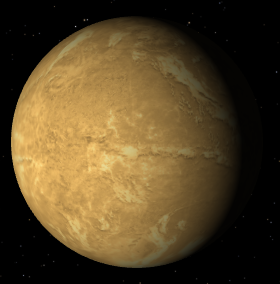
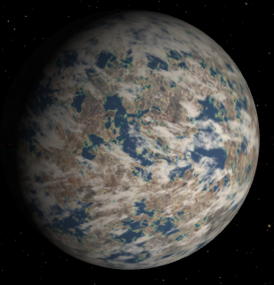
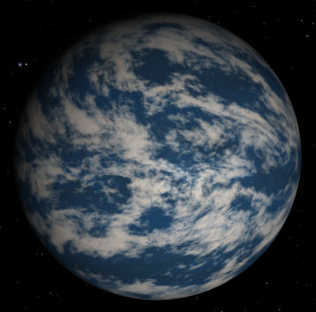
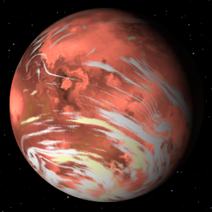
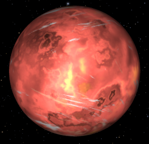
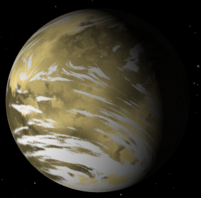
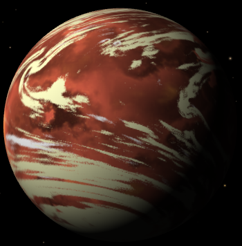
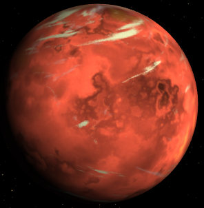

Exoplanets have been exhaustingly analysed for the purpose of finding extra-terrestial life, however in the far future, human life may have a reason to look to migrate
or expand to another planet. Which planet would you choose? Whether humans can survive on another different planet is still, for the most part, unknown. This is mostly due to lack of data to produce
an answer and the fact that humans do not currently hold technology powerful enough to even colonise Mars.
How would you survive on an exoplanet? There are many factors which affect how survivable a planet may be, unfortunately, much of the data needed has not been discovered yet eg. atmospheres.
This analysis will focus on whether the planets are in the Habitable Zone (the ability to host liquid water on its surface), the temperature of the planet,
the surface gravity of the planet, the planet type and any similarities between the exoplanet and Earth. These variables can all be calculated since there is lots of data.
This data story will show you what exoplanet discoveries humanity has made so far, how they were made,
and whether it will be possible for humans to live on an exoplanet.
Our progess so far
Our search for exoplanets has already shown success with thousands of planets already documented. One problem which impends our ability to travel to planets
is the distance between us and the exoplanet. If you are interested in exploring a 3D Map of exoplanets Click this link!
The graph below shows the logarithmic distribution
of distances of exoplanets from the earth, and shows how new exoplanet discoveries expanded our horizons each year.
Between 1989 and 2000, there are not many discoveries and most of them are in closer range. As the years increase, you can see how new techniques and
technologies developed increase our ability to find further exoplanets and exoplanets in larger quantities.
There is one exoplanet which is far closer than all the other planets. This exoplanet is in the Proxima Centauri system, which is the
closest known star system to earth. This system is 1.30 parsecs away (about 4.24 lightyears). As the human race is still currently limited in their space travel capabilities,
in the future, this exoplanet might be the first planet visited outside the solar system. So far, astronomers have not concluded whether it is habitable or not
, it's orbit is in the Habitable Zone, however it has been noted by NASA that the planet is bombarded with 30 times more UV Rays than earth.
Proxima Centauri b

Discovery Date
2016
Star System
Proxima Centauri
Host Star type
M5.5 V
Planet Type
Super-Earth
Distance
1.30 pc (4.24 ly)
Radius
1.08 Earth Radius
Mass
1.27 Earth Mass
Gravity
1.15 g
Temperature
234 K (-39°C)
The graph below shows how we have been finding exoplanets. The most successful technique by far is the "Transit" technique, which involves using a telescope to
measure electromagnetic waves originating from a star, and measuring the change as the planet passes in front of the star. To learn more about techniques to find exoplanets
Click this link!
Different techniques tend to discover most a specific type of planet. For example, transit tends to discover larger planets or planet which have a low
orbit period. Microlensing has been used increasingly
over the years, and this technique is known to capture exoplanets further away than other techniques. As new techniques develop in the future, more of our galaxy will be revealed, meaning more potentially habitable planets!
Could Humans live on an exoplanet?
Would any of the discovered planets be suitable to host human life? This section will dive deep into the exoplanet data to find which planets would be
most suitable. The temperature, gravity, planet type and orbit eccentricity of each planet will be taken into account.
The graph below shows the distribution of temperatures and gravities of disocvered planets. The solar system planets are also included for perspective.
There are 3 zones shown. The green "Survivable Zone" at these temperatures and gravity, humans can survive just like they can on earth using clothing and shelter.
The values are taken from the hottest and coldest locations on earth. Scientist have also approximated humans can survive up to 2 times of earth's gravity.
The yellow "Survivable with aid" zone is an approximation of human survivablility if they are aided with high tech equipement that is currently inaccessible to us,
such as high-tech shelters, space suits or other equipement. The red zone means it is very unlikely to be a candidate for human survival.
From looking at the graph there are a few planets of interest which are similar to earth and fulfill the criteria for being survivable. Planets should be rocky and
be within the survivable area to qualify.
Many planets in the TRAPPIST-1 system qualify for this, but also many others in the survivable area. The two planets in the Kepler-1649 system
are also solid candidates as they are Super-Earth planets with high similarity to earth. Details of each some of the planets are shown below. Note that all images
are hypothetical pictures from NASA's exoplanet map.
TRAPPIST-1 e

Discovery Date
2017
Star System
TRAPPIST-1
Host Star type
M8 V
Planet Type
Terrestial
Distance
12.4 pc (40.4 ly)
Radius
0.92 Earth Radius
Mass
0.69 Earth Mass
Gravity
0.81 g
Temperature
-22°C
TRAPPIST-1 d

Discovery Date
2016
Star System
TRAPPIST-1
Host Star type
M8 V
Planet Type
Terrestial
Distance
12.4 pc (40.4 ly)
Radius
0.78 Earth Radius
Mass
0.38 Earth Mass
Gravity
0.62 g
Temperature
15°C
Kepler-1649 b

Discovery Date
2017
Star System
Kepler-1649
Host Star type
M5 V
Planet Type
Super-Earth
Distance
92.19 pc (300.7 ly)
Radius
1.02 Earth Radius
Mass
1.03 Earth Mass
Gravity
0.997 g
Temperature
34°C
Ross 128 b

Discovery Date
2017
Star System
Ross 128
Host Star type
M4 V
Planet Type
Super-Earth
Distance
3.38 pc (11.02 ly)
Radius
1.10 Earth Radius
Mass
1.40 Earth Mass
Gravity
1.14 g
Temperature
28°C
The previous graph only took into account the average temperature. Some planets have extremely eccentric orbits where the apastron (furthest point from the star) is a lot
higher than the periastron (closest point to the star). This means the temperature can vary greatly at both these points.
The great below plots the points of each of the planets. The planets shown outlined in red are the solar system planets. The ones outlined in yellow are planets of interest
which were terrestrial/super-earth planets in the survivable zone in the previous graph. Note that the temperature values in this graph are calculated with the assumption that
the atmosphere is 100% efficient in distributing the heat accross the surface.
From this graph we can pick out additional planets which could qualify as a survivable planet. Planets such as TRAPPIST-1 e are emphasised further since the orbits are not too
eccentric. Shown below are some more candidates which could be considered.
Kepler-442 b

Discovery Date
2015
Star System
Kepler-442
Host Star type
K5 V
Planet Type
Super-Earth
Distance
366 pc (1194 ly)
Radius
1.34 Earth Radius
Mass
2.36 Earth Mass
Gravity
1.31 g
Temperature
-32.2°C
Kepler-1652 b

Discovery Date
2017
Star System
Kepler-1652
Host Star type
M5 V
Planet Type
Super-Earth
Distance
252 pc (822 ly)
Radius
1.63 Earth Radius
Mass
3.19 Earth Mass
Gravity
1.24 g
Temperature
-5.1°C
Kepler-1649 c

Discovery Date
2017
Star System
Kepler-1649
Host Star type
M5 V
Planet Type
Super-Earth
Distance
92.19 pc (300.7 ly)
Radius
1.06 Earth Radius
Mass
1.20 Earth Mass
Gravity
1.07 g
Temperature
-39.1°C
Conclusion
There are a few planets which are good contenders which have been picked out during the analysis. The most appealing system by far is the TRAPPIST-1 system. With 7 rocky planets,
4 of which are in the habitable zone, and specifically TRAPPIST-1 e, this system has the highest chance out of all discovered systems to have a planet which humans can survive on. Another strong contender
is the Kepler-1649 system, containing 2 planets in the habitable zone which might be survivable for humans.
In conclusion, the possibilty of humans living on exoplanets will become increasingly real as technologies develop. Out of the billions of exoplanets out there in the galaxy,
we have so far only documented and analysed a few thousand. The more we discover, the more chances of finding a planet which is suitable for humans.
TRAPPIST-1 system illustration by NASA